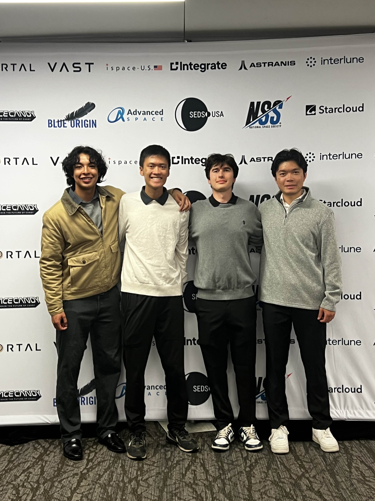
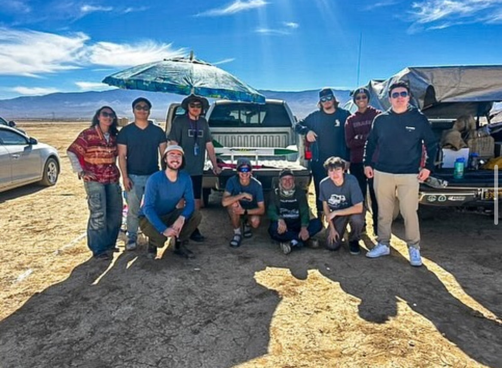
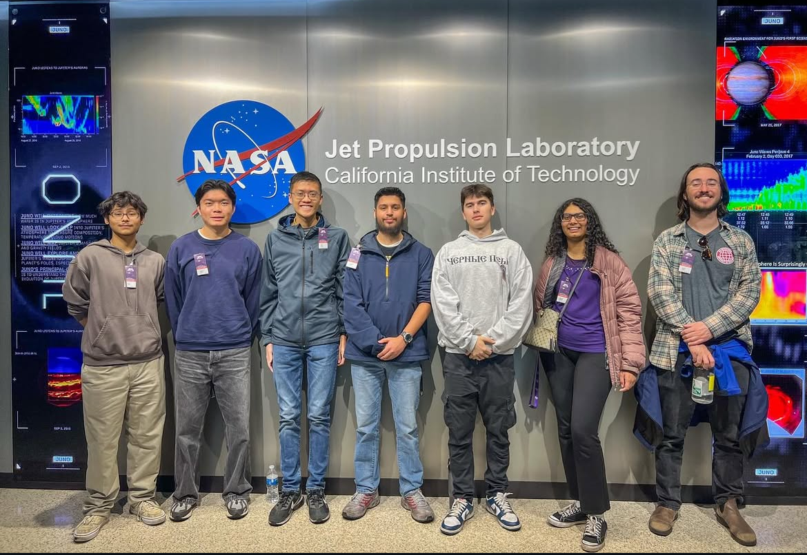
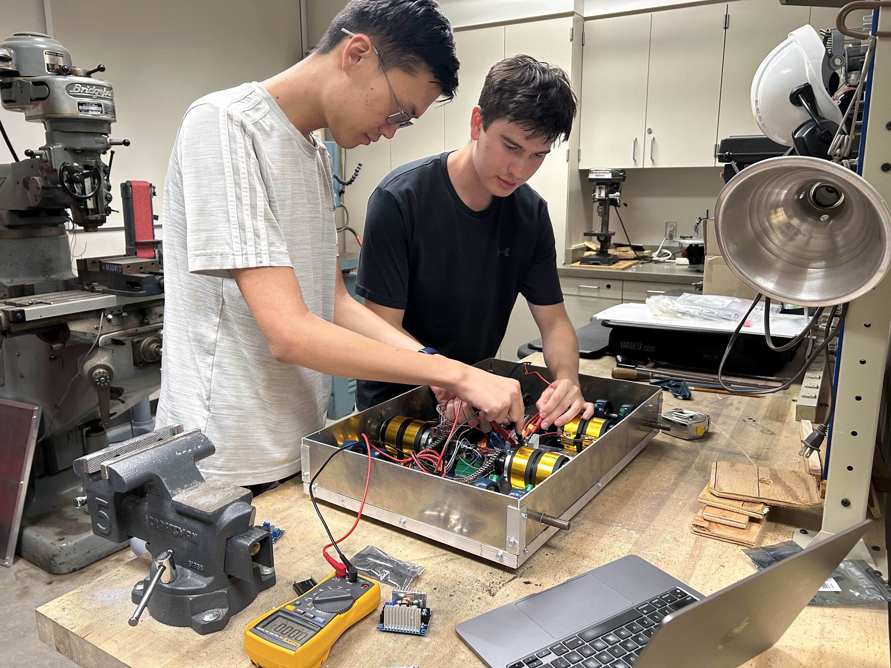

Students for the Exploration and Development of Space (SEDS) at the University of Redlands.
🌍 What is SEDS?
SEDS (Students for the Exploration and Development of Space) is an international, student-run nonprofit
that empowers students to pursue projects and careers in space exploration and aerospace. Chapters organize hands-on
engineering projects, research initiatives, outreach, policy and advocacy efforts, and professional development through
conferences, workshops, and partnerships with academia and industry.
Hands-on technical projects: rockets, rovers, UAVs, satellites, payloads, and data systems
Competitions & challenges, conference participation, and speaker events with industry leaders
STEM outreach and education for local communities and K-12 programs
Career development: networking, mentorship, internships, and research pathways
🏫 Our Chapter at the University of Redlands
I serve as President and Project Lead of the Redlands SEDS chapter. We operate as a cross-functional
engineering team where students learn by building real hardware and flying or driving it. Our culture is:
own real hardware, iterate fast, and document well.
Impact
Grew membership to 20+ active builders across mechanics, electronics, and software.
Coordinated cross-functional subteams delivering validated CAD and simulation designs.
Led L1 high-power rocket builds with integrated avionics and telemetry.
Practice
Design reviews, test plans, and flight/mission readiness checklists.
Bill-of-materials, procurement, safety, and documentation standards.
Mentorship, onboarding, and workshops for new members and subteam leads.
🛰️ Programs & Activities
Rocketry & Certifications
L1 certification pathway with build mentorship, OpenRocket & MATLAB analyses.
Composite/fiberglass airframe work, avionics integration, recovery systems, and telemetry.
Group launch days, field operations, safety procedures, and flight data logging.
Rover & Field Robotics
Multi-terrain rover with robotic arm and drone docking capability.
ESP32/LoRa motor control, live data and video streaming, and autonomy-ready compute stack.
Rover-based LiDar and sensor-fusion platform for ArcGIS mapping of campus buildings.
Astronomy, Telescopes & Observing
Night-sky observation sessions using campus telescopes and imaging equipment.
Planned digital telescope integrations and tracking experiments.
Research, Departments & Capstones
Support for faculty and senior capstone research in physics, mechanics, and space systems.
Drone-based imaging and data collection for the GIS department using Python and OpenCV.
Trips & Community
Visits to JPL and regional aerospace companies.
Attendance at national space/aerospace conferences and career events such as SpaceVision.
Launch weekends, field tests, camping, and team-building retreats.
📸 Gallery
A few snapshots from rover builds, rocket launches, and workshop sessions.




🙌 Join SEDS Redlands
Whether you’re into mechanical design, embedded systems, AI/computer vision, GIS, finance, or outreach—there’s a spot for you.
We’ll get you building real flight and field systems fast, with mentorship and clear tasks.